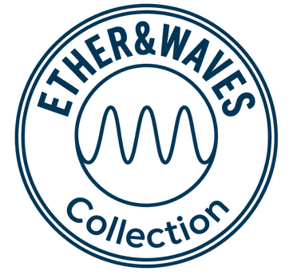

Las cuatro ataduras del pensamiento
El verdadero margen de nuestra libertad mental
Desde la perspectiva de la metafísica y el trabajo con la conciencia, la percepción habitual de que somos seres absolutamente «libres» de pensar lo que queramos es, en gran medida, una ilusión. La mente humana opera dentro de un margen de maniobra muy estrecho, condicionado por influencias sutiles, biológicas, energéticas y subconscientes.
A continuación vamos a desarrollar los cuatro grandes pilares que limitan y condicionan nuestra libertad de pensamiento, así como el papel real que le queda a nuestra voluntad.
1. Los egregores: la red mente-colectiva
Un egregor es una forma de pensamiento colectivo o un campo electromagnético/energético creado y alimentado por la mente, las emociones y la fe de miles o millones de personas (religiones, ideologías políticas, nacionalismos, modas o dinámicas sociales).
- Cómo nos ata: al nacer o interactuar en sociedad, la mente no opera en el vacío; se conecta automáticamente a estos campos colectivos. El egregor funciona como una «frecuencia de radio» dominante.
- Efecto en el pensamiento: cuando crees que estás teniendo un pensamiento propio o defendiendo una idea con libertad, muchas veces solo estás sintonizando y reproduciendo el dogma o la carga emocional del egregor al que estás conectado. La presión invisible del grupo y del ideal colectivo moldea tus valores, juicios y creencias sin que te des cuenta.
2. Entidades de bajo astral y ondas de baja frecuencia
En los planos sutiles más cercanos a la materia (el plano astral bajo) existen entidades e influencias energéticas que se alimentan de emociones de baja densidad: miedo, ira, culpa, deseo desmedido, ansiedad.
- Mecanismo de influencia: estas entidades no «piensan por ti», sino que utilizan ondas de frecuencia sutiles o «parasitaje energético» para susurrar o proyectar pensamientos en tu campo mental.
- Inducción de estados: un pensamiento negativo espontáneo (como un ataque repentino de inseguridad, rabia desproporcionada o paranoia) a menudo no nace de tu ser, sino de una interferencia externa que busca hacerte reaccionar. Al reaccionar emocionalmente, generas la energía de baja frecuencia que alimenta a estas entidades, creando un bucle de manipulación sutil.
3. La programación del subconsciente y la «basura» acumulada
El subconsciente procesa más del 90-95 % de nuestra actividad mental diaria. Funciona como un disco duro donde se almacena todo nuestro historial vital y hereditario.
- Los condicionantes: ahí residen los traumas de la infancia, las herencias transgeneracionales, las creencias limitantes adoptadas de los padres, las heridas emocionales no sanadas y los patrones de supervivencia.
- Falta de libertad consciente: la mente consciente cree que está tomando decisiones libres en el presente, pero en realidad solo está justificando de forma racional lo que el subconsciente ya ha determinado a través de sus sesgos, miedos y defensas automáticas. Si no se hace un trabajo de limpieza del inconsciente, pensamos en automático una y otra vez.
4. La limitación energética y los chakras: el modo supervivencia
La libertad de discernimiento requiere un nivel y un caudal elevados de energía vital (Prana o Chi). El sistema de chakras refleja cómo se distribuye esta energía en el cuerpo:
- Modo supervivencia (chakras 1, 2 y 3): cuando vivimos con estrés, miedo, carencia o preocupaciones constantes, toda la energía disponible se queda atrapada en los centros inferiores (raíz, sacro y plexo solar). Estos chakras gestionan la supervivencia física, la reacción emocional impulsiva y el ego/poder personal.
- El bloqueo hacia el corazón (chakra 4): si la energía no logra ascender al centro cardíaco (Anahata), se pierde la conexión con la empatía, el amor incondicional y la coherencia electromagnética que equilibra mente y emoción.
- La ceguera del discernimiento (chakra 6): para activar la visión clara, la intuición y la capacidad de discernir lo verdadero de lo falso (el «Tercer Ojo» o chakra Ajna), se requiere que la energía fluya con fuerza hasta los centros superiores. Sin suficiente energía en el chakra 6, la persona es fácilmente manipulable, incapaz de ver más allá de la ilusión y propensa a aceptar narrativas falsas o engaños.
Cuadro resumen de las ataduras del pensamiento
| Dimensión | Fuente de limitación | Efecto en la mente |
|---|---|---|
| Colectiva | Egregores | Pensamiento de rebaño, dogmas e ideologías asumidas como propias. |
| Astral / Sutil | Entidades de bajo astral | Parasitaje, pensamientos intrusivos negativos, estados de miedo e ira. |
| Psicológica | Subconsciente / Traumas | Respuestas automáticas, condicionamientos pasados y creencias limitantes. |
| Energética | Bloqueo en chakras inferiores | Falta de discernimiento (Chakra 6 apagado), vivir a la defensiva. |
Conclusión: el verdadero margen de libertad
Nuestro margen de libertad de pensamiento original es sumamente reducido. En un estado ordinario e inconsciente, el ser humano no piensa, sino que «es pensado» por su entorno, sus traumas, las influencias astrales y la biología de la supervivencia.
Sin embargo, ese pequeño margen que nos queda es la voluntad consciente y la atención. La verdadera libertad no consiste en intentar controlar cada pensamiento que surge, sino en:
- Desarrollar la autoobservación: darse cuenta de que «yo no soy mis pensamientos».
- Aumentar la frecuencia vibratoria y la energía vital: para que la energía ascienda hacia los chakras superiores (4, 5, 6 y 7) a través de la meditación, el autocuidado y la respiración.
- Limpiar el subconsciente y desengancharse de los egregores: cuestionar las propias creencias y dejar de alimentar campos colectivos de conflicto o miedo.
La libertad mental no es un punto de partida con el que nacemos totalmente desarrollado, sino una conquista progresiva que requiere elevar la energía y mantener la voluntad despierta.